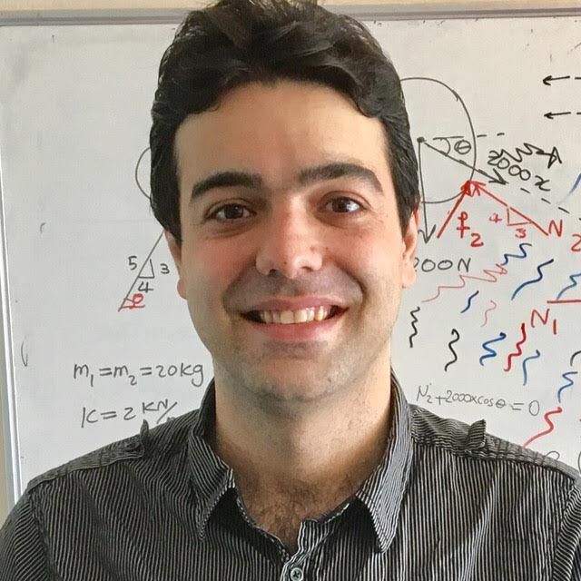
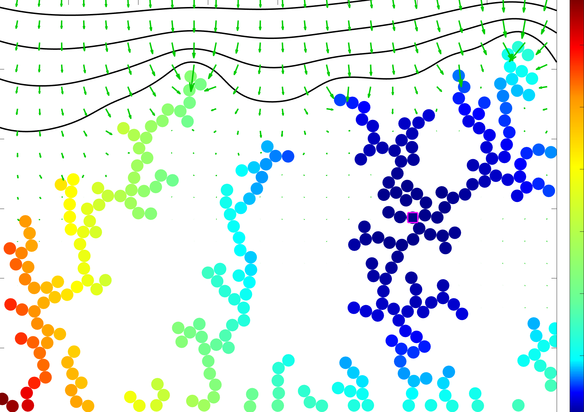
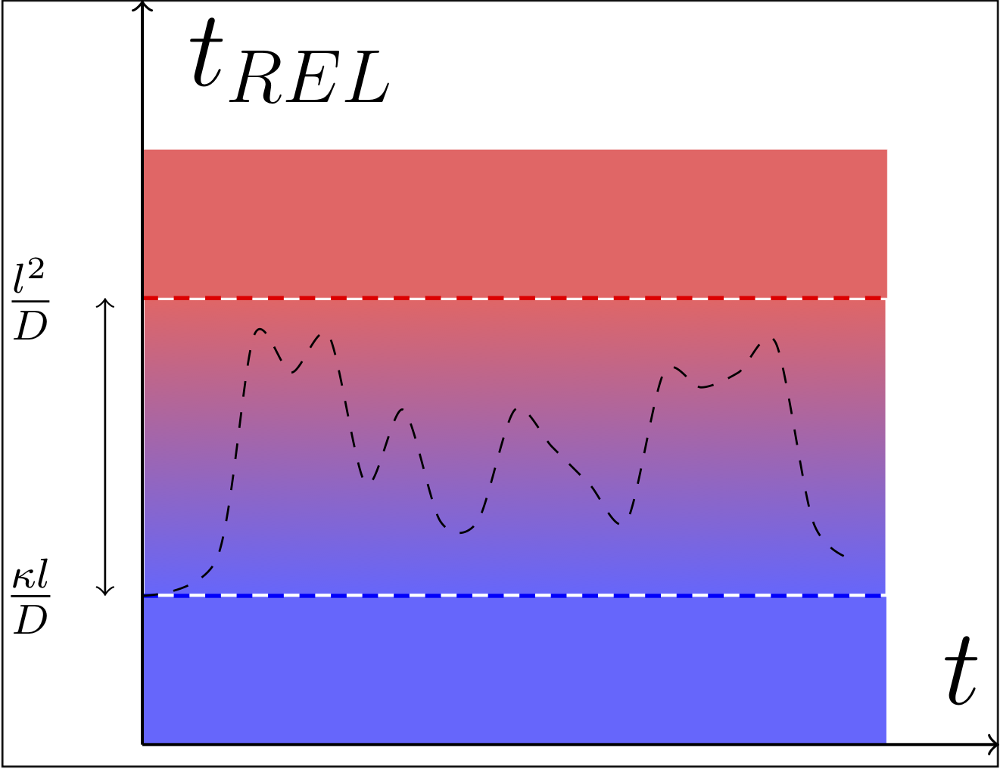
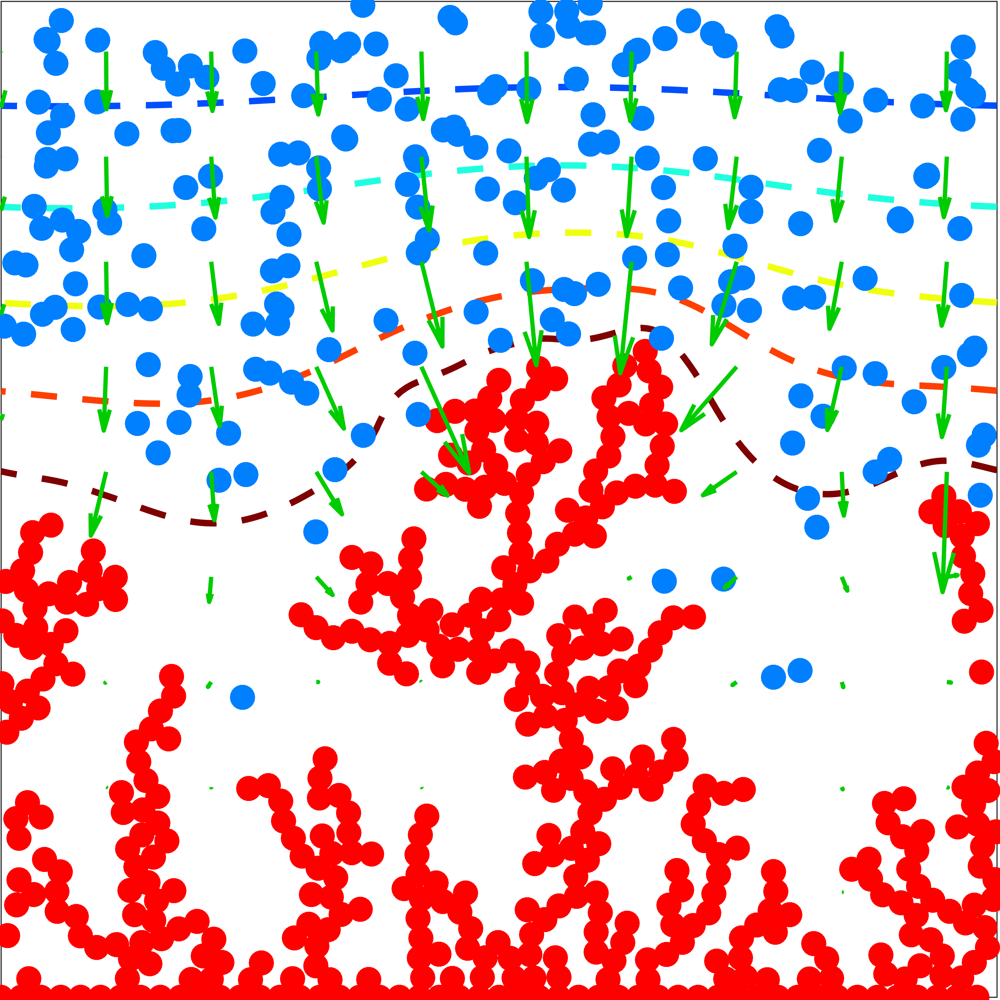

Asghar Aryanfar - Lab of Energy Materials and Sustainability (LEMS)
|  | Asghar Aryanfar Assistant Professor Visiting Researcher Email: aryanfar@caltech.edu |

Jun’20: 2 MSc positions are available for developing multi-physic modeling of rechargeable sustainable energy storage systems. Current projects include 3D percolation from grain boundaries, geometry role of the interface , thermodynamics of electro-dissolution, and mechanics and physics of hybrid composites.
May’20: 1 PhD position is available on computational multi-scale modeling of the transient behavior in stationary/flow batteries (~ 70%) and the fabrication on the lab (~ 30%). We would require proficiency in Python and the hands-on experience.
May’20: 2 MSc positions are available for computational development of the force-chain in amorphous microstructures.
New Papers (May, Jun’20)
|  |
|
|  |
|
|  |
|
Brief Bio
I am Assistant Professor of Mechanical Engineering at American University of Beirut (AUB) as well as Visiting Researcher at California Institute of Technology (Caltech). My research mainly is on designing devices and developing multiphysics/chemistry methods for energy storage and conversion. Current projects include attaining high energy, safe and self-sustaining rechargeable batteries and predicting/controlling the corrosion/fracture of materials in extreme states. Here is more on my Background, Research, Publications and Teaching experiences as well as my Resume/CV.
News
Jun’20: Awarded Internal Research Board Grant ($30,000/2yrs)
May’20: Awarded Masri Institute Grant for Sustainability ($50,000/2yrs)
Apr’20: Outreach travel grant awarded ($2,500/year)
Mar’20: Paper published in Structural Concrete: Novel Percolation-based Measure for Fibre Efficacy in Fiber‐reinforced Concrete Beams
Jan’20: Lab establishment proposal awarded ($60,000)
Dec’19: Sajed Medlej joins as a PhD student in Mechanical Engineering. Here a sample of his publication.
Nov’19: Book chapter published in Advances in Materials Science Research, Volume 39, ISBN: 978-1-53616-176-2: Electrochemical Systems: Electrodes and Double Layers
Oct’19: Talk at Electrochemical Society Conference (ECS), Atlanta, GA
 : Optimal Pulse Charging for the Dendritic Electrodeposition in Mesoscale Electrodes
: Optimal Pulse Charging for the Dendritic Electrodeposition in Mesoscale Electrodes
Sep’19: Paper published in Physical Review E: Finite Pulse Waves for Efficient Suppression of Mesoscale Dendrites in Rechargeable Batteries
Aug’19: Ayse Cetinler joins Politecnico di Milano
 as a graduate student in Civil Engineering.
as a graduate student in Civil Engineering.
Jul’19: Paper published in Corrosion Science: Constriction percolation model for coupled diffusion-reaction corrosion of zirconium in PWR
May’19: Talk (sponsored) at American University of Beirut, Mechanical Engineering department, Beirut, Lebanon
 .
.
Oct’18: Paper published at Journal of Nuclear Materials: Multilayer interface tracking model of zirconium clad oxidation
May’18: BAUBAP Grant awarded: Novel research on energy materials. (150,000 TL/2yrs)
Jan’18: Paper published at MRS Advances: Theoretical pulse charge for the optimal inhibition of growing dendrites
Dec’17: KOSGEB and BIGG Grants awarded: Fabrication of novel safe battery of higher energy density. (300,000 TL/2yrs)
Aug’17: Talk (sponsored) at QUENCH workshop (IAEA), KIT, Karlsruhe, Germany
 : Novel percolation model in post-transition growth kinetics of heterogeneous zirconium oxide
: Novel percolation model in post-transition growth kinetics of heterogeneous zirconium oxide
Jan’17: Publication featured in Caltech News: Building Better Batteries.
Jan’17: Paper published at Proceedings of National Academy of Science (PNAS): Enhanced strength and temperature dependence of mechanical properties of Li at small scales and its implications for Li metal anodes
Aug’16: Paper published at Chemical Physics Letters: Lithium batteries: Improving solid-electrolyte interphases via underpotential solvent electropolymerization
Jun’16: Talk at EMN Conference, Prague, Czech Republic
 .
.
May’16: Talk (sponsored) at Ecole Polytechnique Federale de Lausanne (EPFL), Mechanical Engineering department, Laussane, Switzerland
 : Engineering Electrochemical Materials for Energy Storage and Sustainability: From Rechargeable Batteries to Power Plants
: Engineering Electrochemical Materials for Energy Storage and Sustainability: From Rechargeable Batteries to Power Plants
Apr’16: Talk on International Congress on Advances in Nuclear Power Plants ICAPP 2016), San Francisco, CA
.
Mar’16: Talk (sponsored) at Tesla
 , Palo Alto, CA .
, Palo Alto, CA .
Mar’16: Paper published at Journal of Metals Materials and Minerals (JOM): Integrated Computational Modeling of Water Side Corrosion in Zirconium Metal Clad Under Nominal LWR Operating Conditions
Aug’16: Talk at Sadoway group, Massachusetts Institute of Technology
 , Cambridge, MA .
, Cambridge, MA .
Nov’15: Two Talks (sponsored) at Apple
 , Cupertino, CA .
, Cupertino, CA .
Oct’15: Interview on American Institute of Physics
 : Extending battery life via off-operation heating
: Extending battery life via off-operation heating
Sep’15: Talk (sponsored) at Bilkent University Mechanical Engineering department, Ankara, Turkey
 .
.
Aug’15: Paper published at Journal of Chemical Physics: Annealing kinetics of electrodeposited lithium dendrites
May’15: Talk at Electrochemical Society Conference (ECS), Chicago, IL: Three Dimensional Modeling of Dendrite Growth in Rechargeable Lithium Metal Batteries
Feb’15: Paper published at Physical Chemistry Chemical Physics: Thermal relaxation of lithium dendrites
Dec’14: Talk at Bazant group, Massachusetts Institute of Technology
, Cambridge, MA .
Aug’14: Paper published at Physical Chemistry Chemical Physics: Quantifying the dependence of dead lithium losses on the cycling period in lithium metal batteries
Jun’14: Talk (sponsored) at Intel Corporation
 , Hillsboro, OR .
, Hillsboro, OR .
May’14: Talk at Electrochemical Society Conference (ECS), Orlando, FL: Investigation of Lithium Dendrite Necking and Formation of Dead Lithium Crystals
Apr’14: Talk at Materials Research Society Conference (MRS), San Francisco, CA
.
Mar’14: Paper published at Journal of Physical Chemistry Letters: Dynamics of Lithium Dendrite Growth and Inhibition: Pulse Charging Experiments and Monte Carlo Calculations
Jan’14: Paper published at Environmental Science and Technology: Effects of Anodic Potential and Chloride Ion on Overall Reactivity in Electrochemical Reactors Designed for Solar-Powered Wastewater Treatment
Dec’13: Talk at Materials Research Society Conference (MRS), Boston, MA
: Lithium Dendrite Growth Control Using Local Temperature Variation
May’13:
 Interview, featured design in SolidWorks, novel closed-loop sanitation system.
Interview, featured design in SolidWorks, novel closed-loop sanitation system.
Oct’12: Talk at Electrochemical Society Conference (ECS), Honolulu, Hawaii
: Modeling of State-Dependent Dendritic Growth Batteries with Potentiostatic Cycling
Aug’12: First prize recipient, Novel self-sustaining sanitation system, Bill and Melinda Gates Foundation: [FastCompany] [Reuters] [Time] [Economist]
Highlights

CNN Interview/featured design, SolidWorks: novel closed-loop sanitation system (May’13). [Link1] [Link2]
Top 2%, Undergraduate class, Sharif University of Technology, Tehran, Iran (May’09) .
6/15000+, National civil engineering olympiad, Iran (Jul’08).
78/500000+, National college entrance exam, Iran (Jun’04).
1/500000+ , National private colleges entrance exam, Iran (May’04). (exempted from military service)
Education
PhD in Mechanical Engineering, California Institute of Technology, Pasadena, CA 91125, 2015. Co-advisors: Prof. Michael Hoffmann (NAE), Prof. William Goddard III (NAS)
MSc in Mechanical Engineering, California Institute of Technology, Pasadena, CA 91125, 2010. Advisor: Prof. Nadia Lapusta
BSc in Mechanical Engineering (top 5%), Sharif University of Technology, Tehran, Iran, 2009. Advisor: Prof. Bahar Firoozabadi
BSc in Civil Engineering (top 2%), Sharif University of Technology, Tehran, Iran, 2008. Advisor: Prof. M. Ali Ghannad
Professional Appointments
Sep’19-present: Assistant Professor, Faculty of Engineering and Architecture, American University of Beirut (AUB), Lebanon.
Sep’16-Aug’19: Assistant Professor, Civil and Mechanical Engineering, Bahçeşehir University, Istanbul, Turkey
Jun’15-Aug’16: Postdoctoral Scholar, Materials Science and Engineering, University of California (UCLA), Los Angeles, CA, PI: Prof. Jaime Marian
Sep’10-Aug’15: Research Assistant, Linde Robinson Lab and Materials Simulation Center, Caltech, Pasadena, CA
Sep’09-Aug’10: Graduate Fellow, Caltech, Pasadena, CA
Jun’07-Sep’07: Intern, FARAB hydropower plant Co, Tehran, Iran
Jun’06-Sep’06: Intern, Azerbaijan Steel Co., Mianeh, Iran
Languages
English ,
Azerbaijani (native)  ,
Persian
,
Persian  ,
Turkish ,
Arabic
,
Turkish ,
Arabic
Address
404 Munib and Angela Masri Institute for Engineering and Architecture, American University of Beirut, P.O.Box 11-0236, Riad El-Solh, Beirut, Lebanon 1107-2020 [Map]